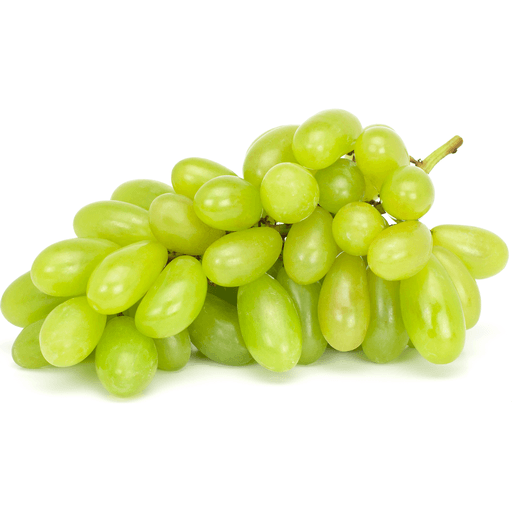
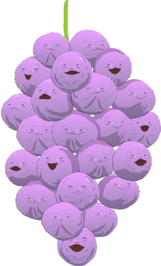

Grapes of the World!
Grapes are one of the oldest cultivated fruits in the world, with a history that spans thousands of years. They are grown on every continent except Antarctica, thriving in a wide range of climates. Grapes are valued not only as fresh fruit but also as the foundation for wine, raisins, and juices. Today, they remain a key crop in global agriculture, linking cultural traditions, economies, and diets worldwide.
Types of grapes in the world
There are thousands of grape varieties in the world, but they are generally grouped into table grapes, wine grapes, raisin grapes, and juice grapes. Table grapes, such as Red Globe and Thompson Seedless, are grown mainly for eating fresh. Wine grapes, including Cabernet Sauvignon, Merlot, and Chardonnay, are cultivated worldwide for diverse wine styles. Other types, like Concord for juice and Black Corinth for raisins, show how grapes serve many different purposes in global agriculture.
| Table Grapes | Wine Grapes | Raisin/Jelly Grapes |
|---|---|---|
| Red Globe | Cabernet Sauvignon | Thompson Seedless |
| Cotton Candy | Merlot | Black Corinth |
| Moon Drops | Pinot Noir | Muscat of Alexandria |
| Crimson Seedless | Chardonnay | Concord |
| Autumn Royal | Sauvignon Blanc | Catawba |